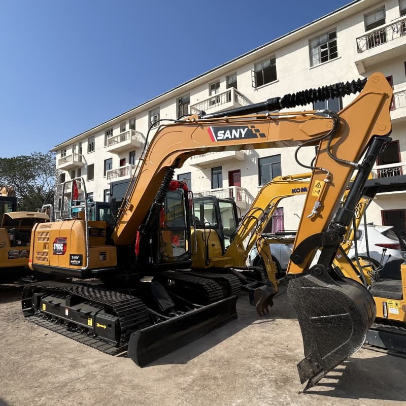

Refurbished SANY SY95 Excavator
The SANY SY95 excavator is a reliable and compact machine that is widely used in the construction and earthmoving industries. Known for its impressive performance, fuel efficiency, and durability, a refurbished version of the SY95 offers an affordable solution for businesses looking for high-quality machinery at a lower cost. With the right maintenance and care, a refurbished SANY SY95 can perform nearly as well as a new one, while providing significant savings.
Honestly, it's almost impossible to buy a brand new excavator from China. They either don't exist or are made in China. If a Chinese seller tells you their Caterpillar/Komatsu/Volvo/Kobelco/Hitachi is brand new, they're lying. Therefore, a refurbished excavator is your best bet.

Here are the detailed specifications for a refurbished SANY SY95C excavator:
Operating Weight and Dimensions
- Operating Weight: 9,000–9,500 kg
- Overall Length: ~7.3–7.6 meters
- Overall Width: ~2.3–2.5 meters
- Overall Height: ~2.7–2.9 meters
- Ground Clearance: ~400 mm
- Tail Swing Radius: ~2.2 meters
- Track Width: 450–500 mm standard
Engine and Powertrain
- Engine Model: Yanmar 4TNV98 or Isuzu 4JJ1X turbo diesel
- Rated Power Output: ~98–100 hp (73–75 kW)
- Maximum Torque: ~410–450 Nm @ 1,500 rpm
- Fuel Tank Capacity: ~220–250 liters
- Gradeability: Up to 35°
- Travel Speed: 3.5–5.5 km/h
- Swing Speed: ~11 rpm
Hydraulic System
- Main Pump Type: Variable displacement axial piston pump
- Flow Rate: ~2 × 130 L/min
- System Pressure: Up to 28–30 MPa
- Hydraulic Oil Capacity: ~200 liters
- Boom Cylinder Bore: ~110 mm
- Arm Cylinder Bore: ~95 mm
- Bucket Cylinder Bore: ~85 mm
Performance Metrics
- Bucket Capacity: 0.35–0.45 m³
- Max Digging Depth: ~4.5–4.8 meters
- Max Reach (Horizontal): ~7.8–8.2 meters
- Max Dump Height: ~5.2 meters
- Bucket Digging Force: ~65–70 kN
- Arm Digging Force: ~45–50 kN
Cab and Operator Features
- Cab Type: ROPS/FOPS certified
- Display: LCD monitor with diagnostics and fuel tracking
- Controls: Ergonomic joysticks with customizable sensitivity
- Comfort: Air-conditioned cab, adjustable suspension seat
- Visibility: Panoramic glass with optional rear-view camera
Smart Features and Efficiency
- Eco Mode: Adaptive engine output for fuel savings
- Auto Idle: Reduces RPM during inactivity
- Centralized Lubrication: Optional for reduced maintenance
- Telematics Ready: Some refurbished units support remote diagnostics
Attachments Compatibility
- Standard Bucket: 0.35–0.45 m³
- Optional Tools: Hydraulic breaker, grapple, compactor, ripper
- Quick Coupler: Hydraulic or manual options available
Refurbishment Scope
Refurbished SY95 units typically include:
- Engine overhaul (injectors, turbo, seals)
- Hydraulic pump recalibration or replacement
- Electrical system rewiring and sensor testing
- Cab restoration (seat, controls, HVAC)
- Structural repairs (boom welding, bushing replacement, repainting)
Overview of the SANY SY95 Excavator
The SANY SY95 is a compact, yet powerful mini-excavator designed for versatility and agility on small to medium-sized job sites. Weighing approximately 9.5 tons, it strikes the right balance between strength and maneuverability, making it ideal for a variety of tasks such as digging, trenching, material handling, and grading. Its compact size allows it to work in tight spaces, while its robust performance makes it suitable for more demanding tasks.
A refurbished SANY SY95 is a cost-effective option for those looking for a reliable excavator without breaking the bank. These machines have been restored to factory standards, with crucial components like the engine, hydraulics, and undercarriage thoroughly checked, repaired, or replaced. Refurbished machines are tested and certified to meet stringent operational standards, ensuring they deliver exceptional performance for years to come.
Key Features of the SANY SY95 Excavator
The SANY SY95 is equipped with several advanced features that make it stand out in its class. Whether new or refurbished, these features allow the machine to perform effectively in a wide range of applications.
Engine and Performance
-
Engine Type: The SY95 is powered by a Yanmar 4TNV98 engine, known for its reliability, fuel efficiency, and performance. The engine typically produces around 74.3 horsepower (55.4 kW), offering the necessary power for demanding tasks like digging, lifting, and material handling.
-
Hydraulic System: The excavator’s hydraulic system is designed for high efficiency and precision. With its load-sensing hydraulic system, the SY95 delivers power on-demand, optimizing fuel usage and improving productivity. The hydraulic system allows for smooth, quick movements when operating the boom, arm, and bucket.
-
Fuel Efficiency: One of the standout features of the SY95 is its fuel efficiency, which reduces overall operational costs. Its engine and hydraulic system are optimized for minimal fuel consumption, making it an excellent choice for businesses looking to keep running costs low.
Digging and Lifting Capabilities
-
Digging Depth: The SY95 offers a maximum digging depth of 4.5 meters (14.8 feet), which is ideal for trenching and excavation tasks. This depth allows operators to perform a variety of tasks, from laying foundations to digging trenches for utilities and pipelines.
-
Lifting Capacity: The SY95 can lift up to 3,000 kg (6,600 lbs) at full reach, making it capable of handling a range of material handling tasks. Whether it’s lifting heavy construction materials, debris, or equipment, the SY95 offers excellent lifting power.
-
Bucket Capacity: The SY95’s bucket capacity ranges from 0.3 to 0.4 cubic meters, depending on the configuration. This allows the machine to load, dig, and scoop effectively for small to medium-sized projects.
Compact Design for Tight Spaces
-
Size and Maneuverability: One of the most significant advantages of the SY95 is its compact size. With a tail swing radius of around 1.6 meters, the machine can operate in confined spaces, making it ideal for urban construction, residential projects, and infrastructure work. Its small footprint allows for easy transportation and access to tight job sites, where larger equipment might struggle.
-
Undercarriage and Stability: The undercarriage of the SY95 is designed for maximum stability, even on uneven terrain. This allows the machine to handle challenging ground conditions without compromising performance. The tracks provide excellent traction, and the machine’s low center of gravity helps prevent tipping or instability.
Operator Comfort and Safety
-
Cabin Features: The operator’s cabin of the SY95 is designed for comfort and productivity. It includes features like an adjustable seat, a wide panoramic window for improved visibility, and ergonomically placed controls for ease of operation. The cabin is air-conditioned, reducing operator fatigue and ensuring a comfortable working environment in hot or cold conditions.
-
Safety Features: The SY95 is equipped with safety features like a ROPS (Roll-Over Protection System) and FOPS (Falling Object Protection System), ensuring the operator’s safety in hazardous working conditions. The cabin’s design offers excellent protection in case of rollovers or falling debris. Additionally, the excavator's structure is designed to enhance stability when working on slopes or uneven surfaces.
Benefits of Purchasing a Refurbished SANY SY95
A refurbished SANY SY95 excavator offers several advantages, especially for businesses looking to save on capital investment while still obtaining high-quality equipment.
Cost Savings
The most immediate benefit of buying a refurbished SANY SY95 is the significant cost savings compared to purchasing a new model. Refurbished machines typically cost 30-50% less than new ones, making them an attractive option for businesses looking to reduce their overhead costs. This allows companies to invest in additional equipment, tools, or resources that can help improve overall productivity.
Certified Quality
Refurbished SANY SY95 machines undergo rigorous testing and restoration to ensure they meet the same performance standards as new equipment. Critical components, such as the engine, hydraulic system, and undercarriage, are inspected, repaired, or replaced to ensure the machine operates smoothly. The refurbished machine is then tested for functionality and safety, ensuring it delivers reliable performance.
Reduced Depreciation
New equipment depreciates quickly, often losing significant value during the first few years of ownership. By purchasing a refurbished SY95, you avoid the steep depreciation curve associated with new machines. This allows you to maximize the value of your investment while keeping operational costs lower.
Environmental Benefits
Opting for refurbished equipment is also an environmentally friendly choice. By extending the lifespan of a machine, companies reduce waste and limit the demand for new resources. Additionally, refurbished machines often come with upgraded parts, like more fuel-efficient engines or hydraulic systems, further enhancing the machine’s environmental performance.
Maintaining a Refurbished SY95 Excavator
Proper maintenance is essential to keeping your refurbished SANY SY95 in optimal working condition. Here are some tips to ensure the longevity and performance of the machine:
-
Routine Inspections: Regularly inspect the engine, hydraulic systems, undercarriage, and bucket for signs of wear and tear. This will help identify any potential issues before they become major problems.
-
Scheduled Service: Follow the manufacturer's maintenance schedule, which typically includes oil changes, filter replacements, and system checks. This ensures the machine operates at peak efficiency.
-
Undercarriage Care: The undercarriage of an excavator is one of the most critical parts. Regularly inspect the tracks for damage and make sure they are properly tensioned to prevent premature wear.
-
Hydraulic System Maintenance: The hydraulic system is essential for smooth operation. Keep the hydraulic fluid at the correct levels and check for any leaks that could impact performance.
Conclusion
The refurbished SANY SY95 excavator offers a reliable and cost-effective solution for contractors and construction companies looking for high-performance equipment without the steep cost of a new machine. With its efficient engine, durable hydraulic system, and compact design, the SY95 excels in small to medium-sized construction projects, material handling, and trenching tasks. By choosing a refurbished model, businesses can enjoy significant savings while still benefiting from the quality and performance that SANY is known for. With proper maintenance, a refurbished SY95 can provide years of dependable service, making it a smart investment for any business.
Our Commitment
- 2 years / 4000 hours warranty.
- EPA certified.
- No sweatshop labor.
Contacts

- [email protected]
- Youtube Instagram Facebook
- Navigation: G206 (Sishu Bridge) in Changfeng County, Hefei City, Anhui Province, 200 meters north to the east